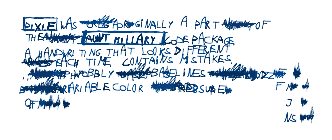

Description
One of the oldest libraries for NodeBox. Pixie is a handwriting that looks different each time, contains mistakes, has wobbly baselines and variable color pressure. The handwriting is based on Tom De Smedt's handwriting.
The library contains the OpenType Pixie font family that must be installed on your system in order for the code to work.
Download
| pixie.zip (120KB) Last updated for NodeBox 1.9.3. Author: Tom De Smedt |
Documentation

A combination of Pixie, WordNet and Wikipedia.
Generate an infinite number of sketchy notes, schemes, jokes and rantings,
on any given subject.
How to get the library up and running
Put the pixie library folder in the same folder as your script so NodeBox can find the library. You can also put it in ~/Library/Application Support/NodeBox/.
pixie = ximport("pixie")
Headings
The heading() command lets you draw text in a fat font:
heading(str, x, y, width, pt=30, slant=0.0)
Draws the string str at position x, y with the given line width and font size pt. The command returns an (x, y) tuple with the position of the heading's bottom right corner. For example:
txt = "Fat trendy Pixie headers!" pixie.heading(txt, 100, 100, 200, pt=15)

Paragraph text
The text() command lets you draw blocks of sketchy handwriting:
text(str, x, y, width, pt=15, slant=0.5, line=False, serif=False)
Draws the string str at position x, y with the given line width
and font size pt. With the optional line parameter set to True the
paragraph will be underlined. When you set serif to True some characters in the
text will look kinda serif-ish. The command returns an (x,y) tuple with the position of the
text's bottom right corner. For example:
str += "Pixie was originally a part of the Aunt Hillary code package," str += "a handwriting that looks different each time, contains mistakes," str += "has wobbly baselines and variable color pressure." pixie.text(str, 20, 20, 200, pt=15)

Text height
With the textheight() command you can guess the height of a text paragraph:
textheight(str, width, pt=20)
Returns the height of a text() paragraph with given str, width and point size pt. Because baselines in a Pixie paragraph wobble randomly, this command gives an idea of the actual height, with an average deviation of 20%.
Messing it up
The library has a few commands to make text look more organic. You can change the text color
and lineheight, highlight keywords and add random errors and scribbles:
color(c=0.8, m=0.4, y=0.0, k=0.4)
lineheight(x=1.2)
keywords(list=(), all=False)
distraction(d=0.05)
The color() command sets the color (in CMYK) of all handwritten text.
The lineheight() command sets the spacing between lines of text in heading() or text().
The keywords() command sets a list of words to highlight. The text() command uses this list to determine which words should be drawn with a border around them. When all is True, it draws any occurence of a keyword in a border (by default just the first one).
The distraction() command determines the number of errors and strikethroughs in. Distraction ranges between 0.0 and 1.0 - the higher the value the more words will be scribbled through. Making mistakes is a recursive process: corrections of mistakes might become mistakes themselves, and so on. Setting a high distraction on a long paragraph may take a while to draw.
|
|
Increased line spacing: pixie.lineheight(1.4) pixie.text(str, 100, 100, 200) |
|
|
Keyword highlighting: k = ["pixie", "aunt hillary"] pixie.keywords(k) pixie.text(str, 100, 100, 200) |
|
 |
Adding mistakes: k = ["pixie", "aunt hillary"] pixie.keywords(k) pixie.distraction(0.8) pixie.text(str, 100, 100, 200) |


Doodles
Here's a fun command to add some doodles to your text!
The sprite() command draws a little critter with random legs, face and body:
sprite(x, y, pt=20)
for x, y in grid(3, 3, 60, 60): pixie.sprite(100+x, 100+y)

Diagrams
The Pixie library has powerful graphing algorithms. Wow! Now you're ready to get
professional.
With the tree() command you can draw a network of related nodes:
tree(root, nodes, x, y, width, height, pt=15, max=10, grow=False, border=False)
The command draws a tree scheme exploding from a central root. The nodes list is
expected to contain tuples of relations, for example:
[ ("node1", ["leaf1a", "leaf1b"]), ("node2", ["leaf2a"]) ]
Nodes in the drawn network become smaller and smaller if the grow parameter is True. Two other commands in the library, line() and node(), are called to draw the individual nodes.
root = "PixieBundle" n1 = ("WordNet", ()) n2 = ("Wikipedia", ()) n3 = ("Pixie", ("paragraph","color","spacing","keywords")) nodes = (n1,n2,n3) pixie.tree(root, nodes, 200, 200, 400, 400, pt=15)